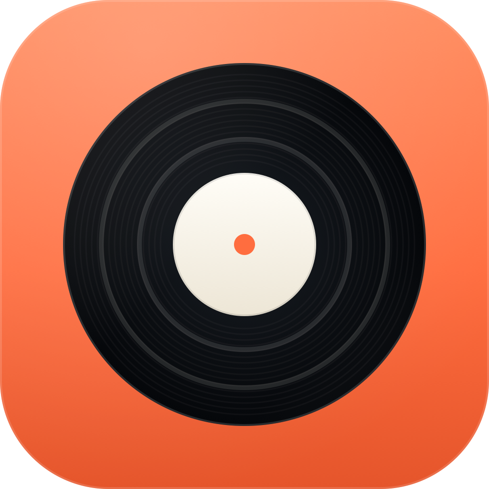
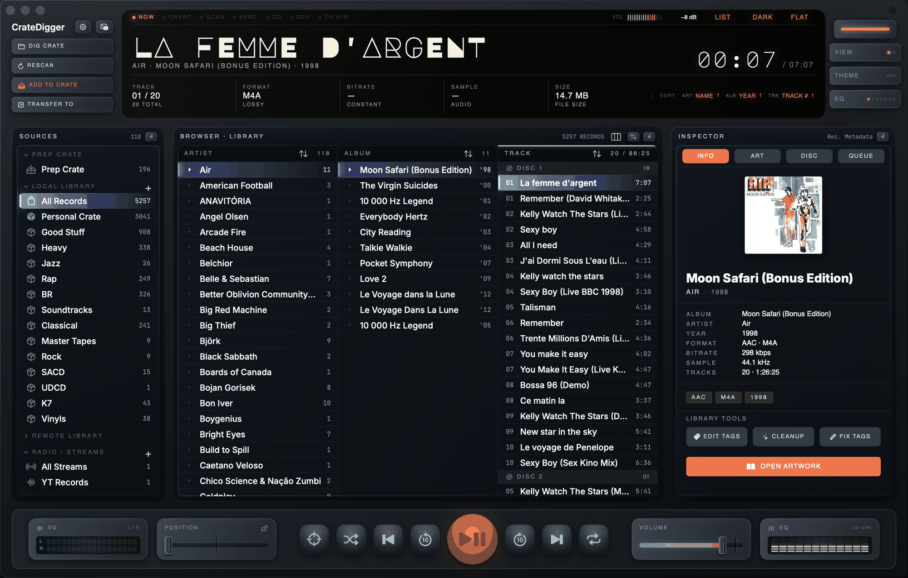

A native macOS console for people who still own their music. Batch-convert with FFmpeg, carve vinyl-side rips into tracks, shape the sound with a real 12-band EQ and live spectrum analyzer, pull in YouTube radio, and push it all to a Rockbox iPod — on hardware that looks and feels like the gear it's replacing.
Get early access to the macOS release, static FFmpeg builds, and scrobble integrations.

Toggle between Carbon (Dark) and Linen (Light) modes and hover over the hotspots to tour the console.

Hover or click on the pulsing orange hotspots scattered on the console above to inspect CrateDigger's features and hardware components.
Inspired by physical retro-modern receivers, the glowing OLED center displays a high-fidelity readout: track tags, format, live bitrate and sample rate, and an LCD scrub bar. Cycle views to a real 28-segment VU + 12-band spectrum analyzer, scan/conversion status, or your connected external device — all pulled from the actual post-EQ audio tap, not a fake animation.
Organize offline tracks into portable, lightweight crates (saved as pretty-printed JSON arrays in your local folders). The Prep Crate stages new imports for tagging and review before they land in your real crates. Also browses Subsonic/Navidrome libraries, ripped CDs, local playlists, mounted external devices (Rockbox iPods included), and YouTube radio — live streams, mixes, and playlists, resolved via yt-dlp.
Inspect nested audio tags and metadata details instantly, including vinyl side, pressing, and edition. Distinguishes album versions and pressings, auto-detects box sets and compilations, and resolves artwork from a content-addressed store — embedded art, folder covers, or a quality-ranked iTunes search — with a full gallery view for browsing and re-tagging covers in bulk.
The bottom chassis hosts the mechanical audio control deck: cue loops (A-B repeat), playlist advance, shuffle, and output-device selection. The fader drives a real +5 dB makeup-gain volume law, and the EQ bands are a genuine 12-band peaking-biquad equalizer with presets (Flat, Rock, Bass, Vocal, Treble, Jazz) or fully custom gains — feeding the same tap that lights the spectrum meters.
We built CrateDigger because streaming services hide your music. It's time to own your files again.
Live streams, mixes, and playlists resolved via yt-dlp — HLS for live sets, clean AAC for VOD — with chapter markers and now-playing metadata pulled straight from the channel.
Auto-detects silence between songs in one continuous vinyl-side rip and slices it into per-track exports, with a sensitivity slider so long ambient passages don't get chopped up.
A genuine peaking-biquad equalizer — not a cosmetic slider — paired with a live FFT spectrum display, both running on the actual playback audio tap in real time.
Detects mounted USB drives and DAPs — Rockbox iPods included — then copies or converts-on-the-fly straight to a folder template you choose.
Group different pressings and editions of the same album under one entry, with automatic box-set and compilation detection so your browser stays clean.
Converts entire directories of mixed audio formats in parallel across every core but one, preserving artwork and injecting tags as it goes.
Flat, Source-Relative, or Metadata-Template output layouts, with a per-album review sheet to edit destination folders before anything gets written — and guaranteed non-colliding filenames.
Rip physical CD audio tracks directly to FLAC or MP3. Connect to your Navidrome, Subsonic, or local streaming servers to browse and cache remote libraries offline.
A content-addressed artwork store with a searchable gallery and quality-ranked iTunes lookups, plus "now playing" and scrobble support for Last.fm.
A content-addressed store keeps one copy of each image no matter how many tracks share it. Browse your whole collection as a gallery, or let quality-ranked iTunes search fill in the gaps.
The landscape of offline music managers is either bloated or looks like a spreadsheet. CrateDigger bridges the gap.
| Feature | CrateDigger | Apple Music / iTunes | Foobar2000 | Plex / Navidrome |
|---|---|---|---|---|
| Batch FFmpeg Conversion | ✓ Yes (Built-in, Multi-threaded) | ✗ Single file only (AAC/ALAC) | ✓ Yes (Requires external plugin setup) | ✗ No (On-the-fly streaming transcode only) |
| Tactile Hardware Interface | ✓ Yes (Carbon/Linen Themes) | ✗ No (Modern flat list style) | ✗ No (Windows-classic sheet grids) | ✗ No (Responsive grid layout) |
| Collision-Safe Path Renamer | ✓ Yes (Flat / Template / Mirror) | ✗ No (Forces proprietary folders) | ✓ Yes (Complex tag-scripts) | ✗ No (Requires prep-organized folders) |
| Double-Tier Crate Staging | ✓ Yes (Prep Crate vs. Saved Crates) | ✗ No (Imports directly to main database) | ✗ No (Flat playlists only) | ✗ No (Monolithic library folders) |
| JSON Portable Libraries | ✓ Yes (Lightweight .cdlib files) | ✗ No (Locked in binary SQLite/XML db) | ✗ No (Proprietary database binary) | ✗ No (SQL databases on server host) |
| Native macOS Performance | ✓ Yes (AppKit/SwiftUI + Sandbox) | ✓ Yes (Native, but bloated) | ✗ No (Wine wrapper/Basic port) | ✓ Yes (Electron client or web browser) |
| Real 12-Band EQ + Live Spectrum | ✓ Yes (Biquad EQ + FFT, on-tap) | ✓ Yes (Fixed presets, no spectrum) | ✓ Yes (Third-party plugin required) | ✗ No (Server has no client-side DSP) |
| YouTube Radio Streaming | ✓ Yes (Live, mix & playlist sources) | ✗ No | ✗ No (Needs external plugin) | ✗ No |
| Vinyl-Rip Auto-Splitting | ✓ Yes (Silence-detect + slice) | ✗ No | ✗ No (Manual cue-sheet editing) | ✗ No |
| External Device Sync | ✓ Yes (Rockbox iPods & USB DAPs) | ✓ Yes (Apple devices only) | ✗ No (Manual file copy) | ✗ No |
FFmpeg 6.x + FFprobe static compilation. Asynchronous execution blocks using ProcessCommandRunner pipelines.
Built exclusively for macOS 13+ (Ventura, Sonoma, Sequoia, Tahoe). Programmed using native Swift 5.10, AppKit bridging, and SwiftUI components.
Decodes FLAC, ALAC, WAV, MP3, AAC, AIFF, OGG, and M4A. Persists libraries via secure security-scoped bookmarks and lightweight .cdlib files.
Supports sandbox environments. Validates batch preflight destinations for write permissions and disk-space estimates prior to encoding runs.
YouTube live/video/mix/playlist sources resolved by yt-dlp into AVPlayer-native HLS or AAC. Browse without interrupting playback.
Detects removable volumes and DAPs on mount, including Rockbox-formatted iPods, with per-device folder templates and a persistent on-disk catalog.